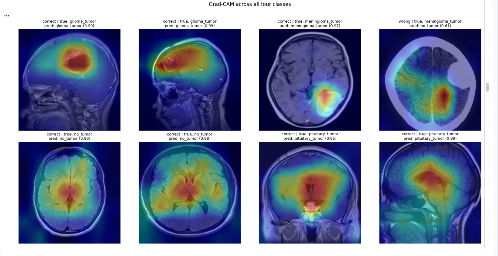
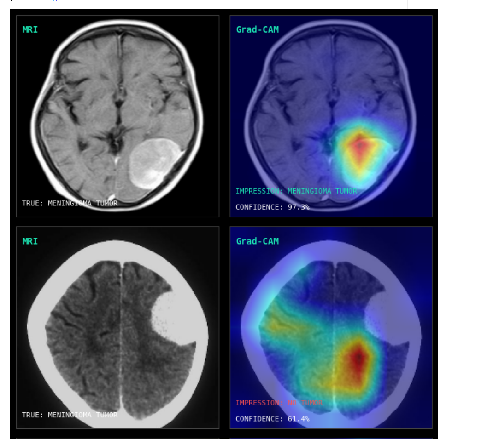
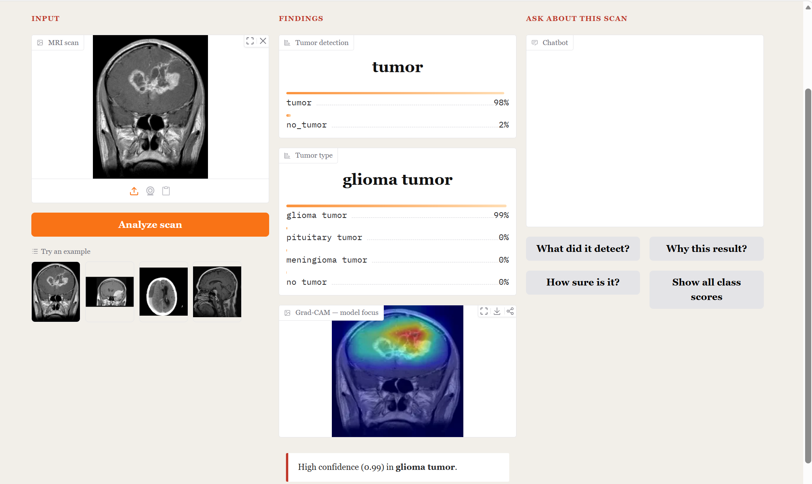

A transfer-learning system that detects and classifies brain tumors from MRI, and shows you exactly where it looked to decide.
Built on EfficientNetB0 with ImageNet weights, fine-tuned in two stages, evaluated on clean stratified splits with no data leakage. Real numbers.
Binary tumor vs. no-tumor from a merged dataset, handling class imbalance with damped weighting.
Four classes (glioma, meningioma, pituitary, no-tumor) trained with label smoothing and staged fine-tuning.
Grad-CAM overlays confirm the model attends to real lesions, not skull or scanner artifacts.
Hover any layer to see what it does. The scan flows left to right through the network to two prediction heads.
Hover a layer above to inspect it. The pretrained backbone does most of the visual work; the two lightweight heads specialize it for detection and typing.
Multiclass F1 across the four categories on the held-out test set.
Rows = true, columns = predicted. Meningioma is the hardest class, occasionally confused with glioma.
The original project reported 78.7% multiclass. Diagnosis revealed the cause wasn't the model. It was tangled preprocessing and premature early stopping. After fixing the pipeline and evaluating on clean stratified splits:
Grad-CAM overlays the model's attention on the scan. Tight focus on the lesion means the prediction rests on real anatomy, and the failures explain themselves.


Upload a scan, get both predictions, see the Grad-CAM, and ask the built-in assistant why. Every answer is grounded in the model's own output.
